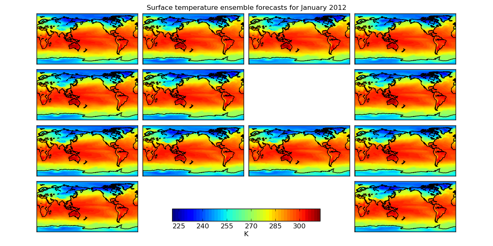
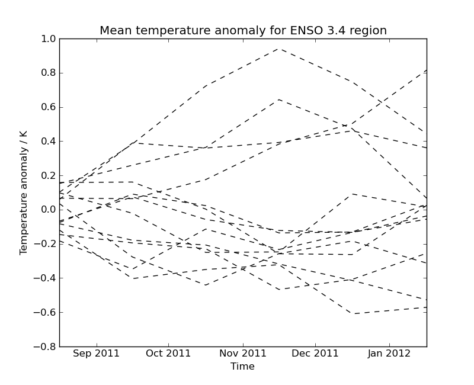

Iris 0.9
This example demonstrates the loading of a lagged ensemble dataset from the GloSea4 model, which is then used to produce two types of plot:
- The first shows the “postage stamp” style image with an array of 14 images, one for each ensemble member with a shared colorbar. (The missing image in this example represents ensemble member number 6 which was a failed run)
- The second plot shows the data limited to a region of interest, in this case a region defined for forecasting ENSO (El Nino-Southern Oscillation), which, for the purposes of this example, has had the ensemble mean subtracted from each ensemble member to give an anomaly surface temperature. In practice a better approach would be to take the climatological mean, calibrated to the model, from each ensemble member.


"""
Seasonal ensemble model plots
=============================
This example demonstrates the loading of a lagged ensemble dataset from the GloSea4 model, which is then used to
produce two types of plot:
* The first shows the "postage stamp" style image with an array of 14 images, one for each ensemble member with
a shared colorbar. (The missing image in this example represents ensemble member number 6 which was a failed run)
* The second plot shows the data limited to a region of interest, in this case a region defined for forecasting
ENSO (El Nino-Southern Oscillation), which, for the purposes of this example, has had the ensemble mean subtracted
from each ensemble member to give an anomaly surface temperature. In practice a better approach would be to take the
climatological mean, calibrated to the model, from each ensemble member.
"""
import matplotlib.pyplot as plt
import numpy
import iris
import iris.plot as iplt
def realization_metadata(cube, field, fname):
"""
A function which modifies the cube's metadata to add a "realization" (ensemble member) coordinate from the filename if one
doesn't already exist in the cube.
"""
# add an ensemble member coordinate if one doesn't already exist
if not cube.coords('realization'):
# the ensemble member is encoded in the filename as *_???.pp where ??? is the ensemble member
realization_number = fname[-6:-3]
import iris.coords
realization_coord = iris.coords.AuxCoord(numpy.int32(realization_number), 'realization')
cube.add_aux_coord(realization_coord)
def main():
# extract surface temperature cubes which have an ensemble member coordinate, adding appropriate lagged ensemble metadata
surface_temp = iris.load_strict(iris.sample_data_path('GloSea4', 'ensemble_???.pp'),
iris.Constraint('surface_temperature', realization=lambda value: True),
callback=realization_metadata,
)
# ----------------------------------------------------------------------------------------------------------------
# Plot #1: Ensemble postage stamps
# ----------------------------------------------------------------------------------------------------------------
# for the purposes of this example, take the last time element of the cube
last_timestep = surface_temp[:, -1, :, :]
# Make 50 evenly spaced levels which span the dataset
contour_levels = numpy.linspace(numpy.min(last_timestep.data), numpy.max(last_timestep.data), 50)
# Create a wider than normal figure to support our many plots
plt.figure(figsize=(12, 6), dpi=100)
# Also manually adjust the spacings which are used when creating subplots
plt.gcf().subplots_adjust(hspace=0.05, wspace=0.05, top=0.95, bottom=0.05, left=0.075, right=0.925)
# iterate over all possible latitude longitude slices
for cube in last_timestep.slices(['latitude', 'longitude']):
# get the ensemble member number from the ensemble coordinate
ens_member = cube.coord('realization').points[0]
# plot the data in a 4x4 grid, with each plot's position in the grid being determined by ensemble member number
# the special case for the 13th ensemble member is to have the plot at the bottom right
if ens_member == 13:
plt.subplot(4, 4, 16)
else:
plt.subplot(4, 4, ens_member+1)
cf = iplt.contourf(cube, contour_levels)
# add coastlines
m = iplt.gcm()
m.drawcoastlines()
# make an axes to put the shared colorbar in
colorbar_axes = plt.gcf().add_axes([0.35, 0.1, 0.3, 0.05])
colorbar = plt.colorbar(cf, colorbar_axes, orientation='horizontal')
colorbar.set_label('%s' % last_timestep.units)
# limit the colorbar to 8 tick marks
import matplotlib.ticker
colorbar.locator = matplotlib.ticker.MaxNLocator(8)
colorbar.update_ticks()
# get the time for the entire plot
time_coord = last_timestep.coord('time')
time = time_coord.units.num2date(time_coord.points[0])
# set a global title for the postage stamps with the date formated by "monthname year"
plt.suptitle('Surface temperature ensemble forecasts for %s' % time.strftime('%B %Y'))
iplt.show()
# ----------------------------------------------------------------------------------------------------------------
# Plot #2: ENSO plumes
# ----------------------------------------------------------------------------------------------------------------
# Nino 3.4 lies between: 170W and 120W, 5N and 5S, so define a constraint which matches this
nino_3_4_constraint = iris.Constraint(longitude=lambda v: -170+360 <= v <= -120+360, latitude=lambda v: -5 <= v <= 5)
nino_cube = surface_temp.extract(nino_3_4_constraint)
# Subsetting a circular longitude coordinate always results in a circular coordinate, so set the coordinate to be non-circular
nino_cube.coord('longitude').circular = False
# Calculate the horizontal mean for the nino region
mean = nino_cube.collapsed(['latitude', 'longitude'], iris.analysis.MEAN)
# Calculate the ensemble mean of the horizontal mean. To do this, remove the "forecast_period" and
# "forecast_reference_time" coordinates which span both "relalization" and "time".
mean.remove_coord("forecast_reference_time")
mean.remove_coord("forecast_period")
ensemble_mean = mean.collapsed('realization', iris.analysis.MEAN)
# take the ensemble mean from each ensemble member
mean -= ensemble_mean.data
plt.figure()
for ensemble_member in mean.slices(['time']):
# draw each ensemble member as a dashed line in black
iplt.plot(ensemble_member, '--k', coords=['time'])
plt.title('Mean temperature anomaly for ENSO 3.4 region')
plt.xlabel('Time')
plt.ylabel('Temperature anomaly / K')
plt.show()
if __name__ == '__main__':
main()